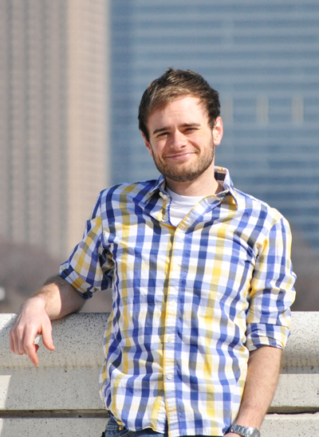

About me
 I'm currently an NSF postdoctoral fellow in the Department of Ecology and Evolutionary Biology at Brown University studying the evolution of musculoskeletal systems. More specifically, I'm interested in the biomechanical principles governing how organisms produce motion, force, and power and how these principles have influenced the evolution and diversification of vertebrate musculoskeletal systems. I address these questions by integrating in vivo experimentation, morphological surveys of natural history specimens, and biomechanical modeling.
I recently completed my PhD with Mark Westneat at the University of Chicago. For my PhD I studied the evolution of feeding in the bird order Anseriformes (waterfowl), integrating ecological data from the literature, morphological data from natural history collections, and functional predictions based on biomechanical modeling, particularly cranial kinesis. As a postdoctoral fellow I am working with Beth Brainerd at Brown University to combine in vivo kinematics collected using XROMM, biomechanical modeling, and collections-based approaches to understand how the biomechanics of suction feeding has influenced the diversification of body forms in ray-finned fishes.
Another component of my research is developing open-source software for shape data collection, computational modeling and web-based visualization. I also have a passion for science education and outreach. In 2014, I worked with the Education department at the Field Museum of Natural History to plan a two-week Biomechanics Summer Camp for teens.
E-mail: aaron_olsen at brown dot edu